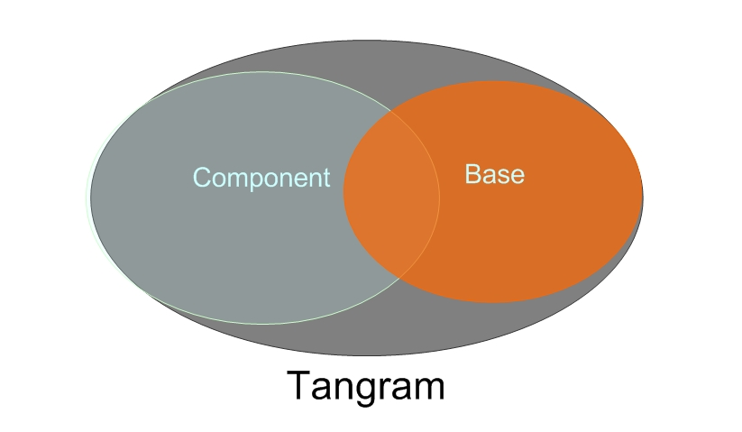
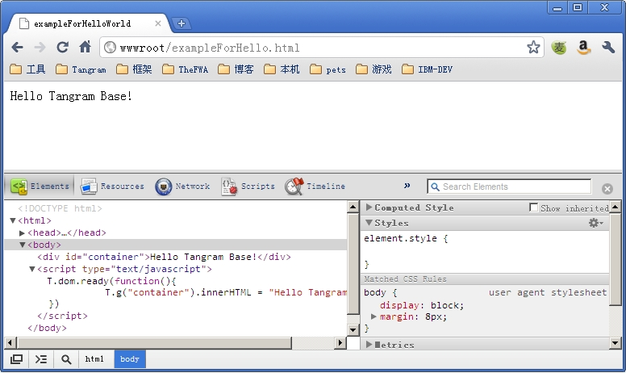
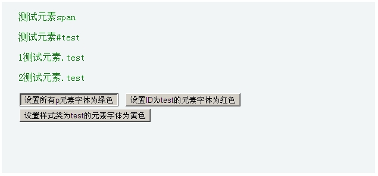
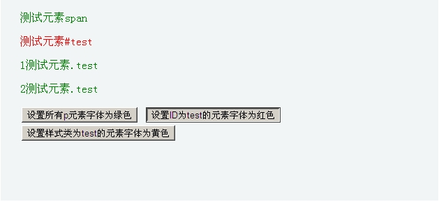
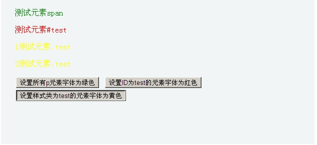
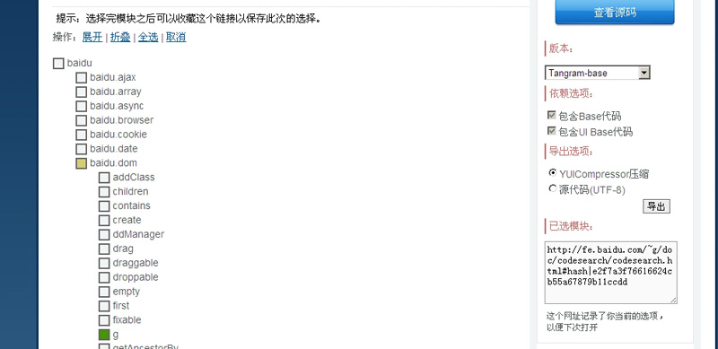
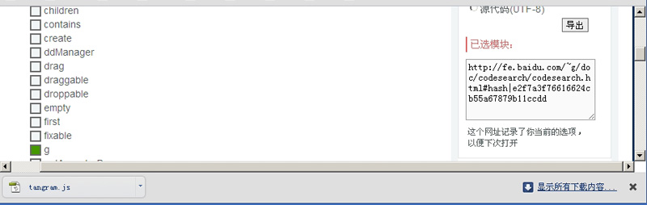
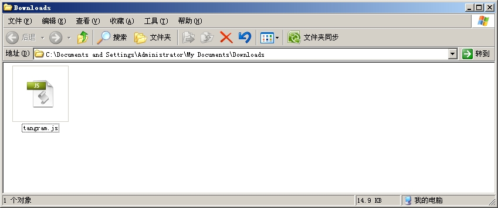

Tangram Base 入门指南教程
1 前言
JavaScript是一种功能强大的（基于原型的）面向对象语言，你可以通过JavaScript操作DOM等浏览器支持的对象来创建丰富的富互联网应用程序（RIA）。但是JavaScript受制于不同的浏览器有不同的JavaScript 实现。这让JavaScript代码实现跨浏览器兼容，在不同的浏览器上表现一致简直是不可能的事。
Javascript框架或库实际上是一系列的工具和函数，他可以根据具体的浏览器环境生成跨浏览器兼容的JavaScript 代码。以允许你的JavaScript 的 代码在不同浏览器和平台上以类似的方式工作。
一个高效的脚本库可以让你更快、更方便的创建互动性强、响应快的网站和web应用程序，接下来本文将向大家介绍百度FE自己整理、开发的前端Javascript库——Tangram。
2 认识Tangram Base
2.1 什么是Tangram Base
在讲Tangram Base之前，首先介绍下Tangram，Tangram是一个容易扩展和定制，集轻巧和高效于一体的团队开发类库，主要由Component和Base组成，Component部分主要是UI和动画，Base部分是基础工具库，现包含200多个基础接口，已经发展到1.3版本。
Tangram Base中包含了DOM操作、AJAX、事件、COOKIES、浏览器判断等接口提供了开发时常用功能的封装，是核心的工具库。
2.2 Tangram Base特点
- 体积小巧，性能优良，使用简单。
- 适合团队开发，丰富的中文文档和本地技术优化，适合中国用户。
- 模块化架构，方便定制与扩展。
- 多浏览器支持。
2.3 Hello Tangram Base
下面这段示例代码演示了当页面加载完成时，在HTML中id为 ”container”的元素其中的内容将被替换为 ”Hello tangram Base!” 我们首先列出需要准备的部分：
- HTML页：里面包含了一个ID为container的元素 。
- 引用CDN上的tangram-base脚本资源。
- Hello Tangram Base的脚本代码逻辑 。
我们把代码逻辑放在的HTML的代码尾部、BODY结束之前，并且使用了T.dom.ready方法，这样做是为了当JavaScript代码执行的时候，确保页面上必要的资源已经被载完全载入。
在代码之前先介绍T.dom.ready这个方法，T是Tangram的命名空间，Tangram所有的函数工具都放在这个命名空间之下。dom是一个包，下面挂了多有关于DOM的操作，ready是一个方法名称。在接下去的示例代码中，所有的Tangram库中的函数方法均是以上述格式调用。同时，baidu等于T也就是说，baidu.dom.ready等同于T.dom.ready。
| exampleForHello.html |
|---|
<!DOCTYPE html> <script type="text/javascript" > </body> |
|  |
3 使用Tangram Base快速构建应用
一个成熟的脚本框架或者库应当包含DOM查找、DOM操作、事件处理、AJAX、以及一些其他的工具集，在下文中将通过两个示例，介绍最常用的DOM查找操作和AJAX。
3.1 Tangram Base示例DOM篇
在WEB页面应用中，使用的最多的就是DOM的操作，使用浏览器原生的方法通过ID、ClassName、甚至是TagName获取元素对象是可以做到的，但是要进行更复杂的筛选就显得无能为力了。
下面的示例将演示在一个HTML片段中根据 ID、CSS选择符找元素，并且通过Tangam框架提供的函数修改元素的外观或内容。
| exampleForDom.html |
|---|
<!DOCTYPE html> </body> |
|    |
在上例中，对于已知ID的元素我们用了T. g方法获得改元素，该方法是T.dom.g的快捷方式。在不知道确切的ID时，我们使用了T.dom.query方法，使用CSS选择器来查询符合条件的元素。
3.2 Tangram Base 示例AJAX篇
AJAX示例应用需要WEB服务器的支持，下面的示例将演示了如何使用T.ajax.get来处理AJAX的应用，与之相对应，还有T.ajax.post，这个方法可以传送一个json格式的对象data。更详细的配置，比如指定失败事件，特定浏览器状态码事件、异步同步模式等选项可以使用T.ajax.reqeust。
| exampleForAjax.html |
|---|
| <!DOCTYPE html> <html> <head> <meta http-equiv="Content-Type" content="text/html; charset=utf-8" /> <title> exampleForAjax </title> <script type="text/javascript" src="http://img.baidu.com/js/tangram-base-1.3.9.js"></script> </head> <body> <div id="msg" style="border:1px solid #9CC;background:#FFF;padding:10px"></div> <input type="button" value="发送ajax请求" onclick="send()"/> <script type="text/javascript"> function send(){ T.ajax.get('msg.txt', function(xhr,msg){ T.g("resultTextarea").innerHTML="状态:"+xhr.status+"<br />返回消息:"+msg; }) } </script> </body> </html> |
 |
在T.ajax.get的第2个参数是当请求被相应后的回调函数，回调函数中传入两个参数，第一个是XMLHttpRequest对象，第二个是URL返回的文本内容。如果要格式化为JSON的话，可以参考如下代码：
| var json = eval( ‘(‘+msg+’)’ ) |
4 定制自己的Tangram
Tangram的一大特点就是可以根据自身的需求定制代码。以减少引用的Tangram库的大小，使页面载入更迅速。我们可以通过tangram.baidu.com上的CodeSearch程序，定制属于自己的Tangram Base库。
地址：http://fe.baidu.com/~g/doc/codesearch/codesearch.html#tangram_stable|nomodule
4.1 分析页面应用程序所需要的组件
定制可以减少框架代码的体积，在这之前我们先要了解我们需要哪些代码。以我们的DOM篇示例为例。我们归纳出使用的接口方法有：
- T.dom.g
- T.dom.query
- T.dom.innerHTML
- T.dom.setStyles
- T.object.each
4.2 在CodeSearch定制所需的资源
1. 展开相应的资源包，选择自己所需要的代码

2. 选择YUICompresson压缩（默认选择）然后 导出tangram.js文件

3. 这个js文件，放到相应的目录下，就可以替换掉示例中HEAD中引用CND上的js资源那段代码了。

5 结语
本文介绍了简要介绍了Tangram Base中的DOM操作和Ajax操作，篇幅所限，我们仅介绍了其中简单的几种常用的接口，在Tangram Base中还有许多高级的应用，切换效果toggle、拖曳drag；以及高级的ajax应用异步async以及回调sio等。并且Tangram Base不是一个独立的轮子，以他为基础，还有Component。FX动画特效等。
Tangram的目标是简单可依赖，我们将一直朝着这个目标努力；希望有越来越多的人能加入Tangram。